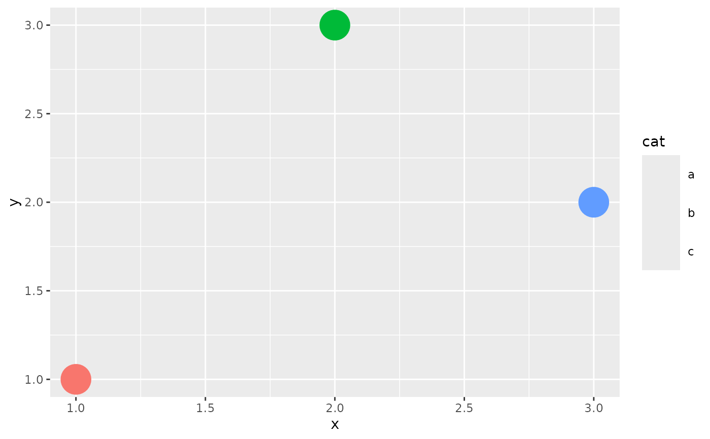

A ggplot2::draw_key() function that draws the icon itself as the
legend key glyph, instead of a generic point/rect. This is
geom_icon()'s default key_glyph; set key_glyph = draw_key_icon on
another geom to borrow it.
Examples
library(ggplot2)
# bundled placeholder shapes; a real pack (e.g. icons::fontawesome) works the same
shapes <- icons::icon_set(system.file("icons", package = "ggicons"))
# borrowed onto geom_point() so its legend key shows the mapped icon
df <- data.frame(x = 1:3, y = c(1, 3, 2), cat = c("a", "b", "c"))
ggplot(df, aes(x, y, colour = cat, icon = cat)) +
geom_point(size = 10, key_glyph = draw_key_icon) +
scale_icon_manual(values = c(shapes$square, shapes$circle, shapes$triangle))
